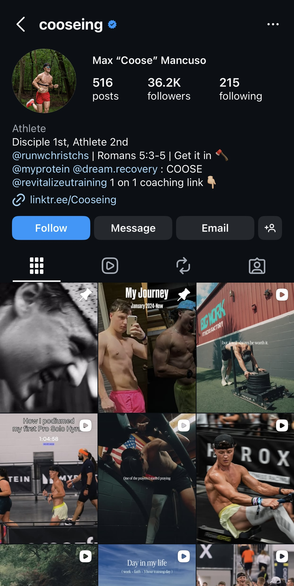
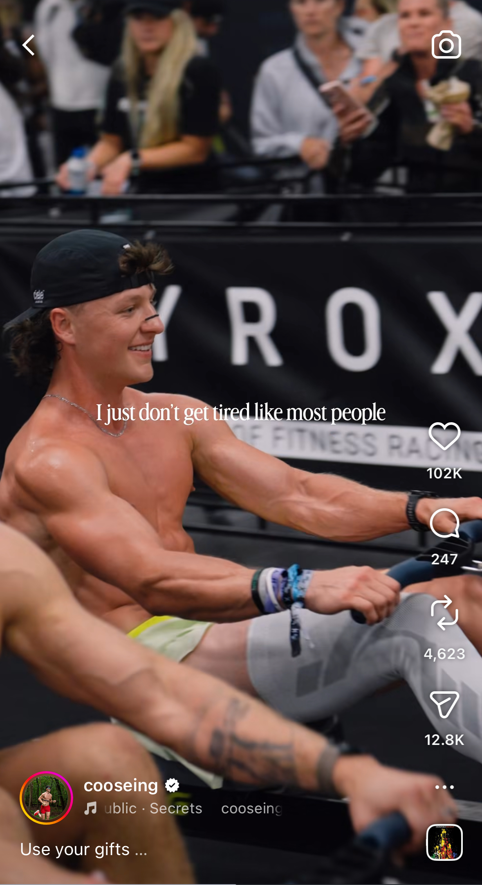

0 to 35K: Building an Athlete's Brand from Scratch
Max Mancuso — competitive fitness athlete and content creator — had a compelling story but no audience. When we started, his Instagram sat at 200 followers and his TikTok at 50. The platform had no consistent identity, no content framework, and no growth strategy. The raw material was there. The architecture wasn't.
I conducted a full audit of comparable creators in the fitness and endurance space, identifying content gaps and audience triggers. I built a content framework centered on Max's authentic story — his transformation, his discipline, his competition journey — and established a platform-native strategy for each channel.
I prioritized Reels with high-share triggers: motivational overlays, competition footage, and raw training content. I structured a posting cadence, coached on caption strategy, and tracked post insights obsessively to iterate week over week.
I identified that Max's most relatable content was his mindset and daily discipline, not just performance highlights. I coached on caption strategy and platform-native formatting.

